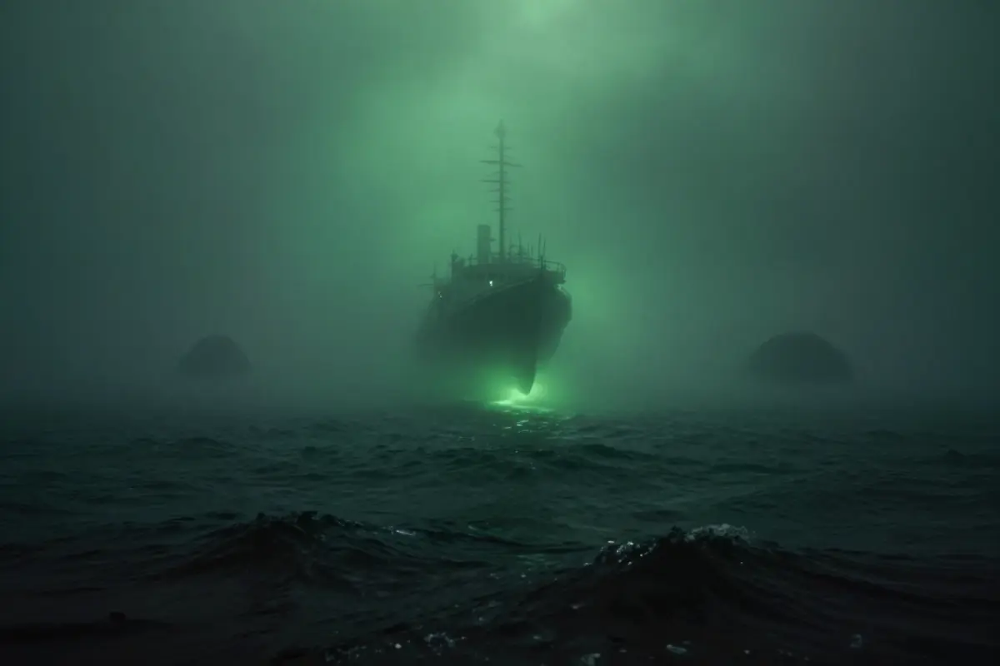

The Bermuda Triangle: Why Do Ships and Planes Keep Disappearing?

The Bermuda Triangle — a vast stretch of the western North Atlantic where ships and aircraft have vanished under mysterious circumstances
It was the afternoon of December 5, 1945. Five Navy planes took off from Fort Lauderdale, Florida, for a normal training flight. About ninety minutes later, the leader spoke on the radio. “I don’t know where we are,” he said. The five planes never came home.
That flight is the best-known story of a place called the Bermuda Triangle. Some people use a darker name, the Devil’s Triangle. It is a part of the western North Atlantic Ocean, about 500,000 square miles in size. It lies between the sunny coast of Florida, the island of Bermuda, and Puerto Rico.
The legend says strange things happen there. Ships vanish and send no call for help. Planes fly into clouds and never come out. Whole crews disappear, as if the sea had swallowed them.
The stories are exciting. Five Navy bombers were lost on a training flight in 1945. A huge cargo ship with 309 people on board vanished in 1918. A tanker full of melted sulfur broke apart in the Atlantic in 1963.
People have told these stories for more than a hundred years. There are bestselling books, big films, and many television programs about the Triangle. Each one promises the truth. Scientists, historians, and government offices have studied it for decades. Still the mystery lives on. It is a mix of real sad events, numbers that were made bigger, and the old human fear of the sea.
The Bermuda Triangle is not an official place. No government map shows it, and its edges are not clear. Most people put the three corners at Miami in Florida, San Juan in Puerto Rico, and the island of Bermuda. Bermuda lies about 640 miles east of Cape Hatteras, North Carolina.
Inside the triangle is a very wide area of open ocean. It includes parts of the Sargasso Sea and the Bahamas. It also holds some of the busiest shipping routes in the western half of the world. Cargo ships, cruise ships, military planes, and private boats cross it every day.
A strong ocean current called the Gulf Stream flows right through the triangle. An ocean current is like a river inside the sea. The Gulf Stream can move at up to 4.5 miles per hour. It carries warm water from the Gulf of Mexico north along the coast and out into the Atlantic.
The weather is warm, and it can change from calm to wild very fast. Atlantic hurricanes pass through this area. Sudden storms, strong thunderstorms, and waterspouts are common. A waterspout is a spinning column of air and water over the sea.
Even Christopher Columbus wrote about odd things here. He sailed through the area in 1492. He wrote that his compass gave strange readings. He also saw a “great flame of fire” in the sky, which was probably a meteor. It is the first written report that links this region with something unusual.
Now back to that day in 1945. The five planes were TBM Avenger torpedo bombers. Together they were called Flight 19. They left Naval Air Station Fort Lauderdale at about 2:10 in the afternoon. Their leader was Lieutenant Charles C. Taylor, a skilled pilot who had fought in the war.
The exercise was called “Navigation Problem No. 1.” It was a standard training run over water, and other groups had finished it with no trouble. The plan was simple. Fly east toward the Bahamas. Drop practice bombs at a place known as “Hen and Chickens Shoals.” Then turn north and fly back to Fort Lauderdale.
But somewhere over the open water, something went badly wrong. At about 3:40 PM, radio workers at Fort Lauderdale began to hear confused messages from Flight 19. Taylor said that both of his compasses had stopped working. “I don’t know where we are,” he told his flight. “We must have got lost after that last turn.”
Things got worse quickly. Taylor seemed to believe they were over the Florida Keys, far to the south and west of where they really were. So he told his planes to fly northeast. That took them farther out over the open Atlantic, not back toward the Florida coast.
As the afternoon went on, the radio messages became more desperate and confused. The weather turned bad. It was harder to see, and the sea grew rough. At about 5:50 PM, the last weak messages from Flight 19 came in. “We’ll have to ditch unless landfall,” one pilot said. He meant they would have to land on the water if they did not see land soon.
All 14 airmen in the five planes were lost. The Navy started a search at once. It sent a Martin PBM Mariner flying boat from Naval Air Station Banana River to look for them. The PBM carried 13 crew members. It never returned.
A merchant ship in the area reported a ball of fire in the sky. It was seen at about the time the PBM would have been over the search area. Investigators decided the plane had exploded in the air. The PBM Mariner had a known weakness, because fuel fumes inside it could catch fire.
In total, six aircraft and 27 men were lost that day. No confirmed wreckage of Flight 19 has ever been found.
Flight 19 is the most famous case. But the loss of the USS Cyclops in March 1918 may be the most puzzling, and it cost the most lives. The Cyclops was a Protector-class cargo ship of the United States Navy. It weighed about 19,360 tons and was 542 feet long.
On March 4, 1918, the ship left Barbados for Baltimore, Maryland. It carried a full load of manganese ore, a rock used to make steel. It also carried 309 crew members and passengers. The ship was never seen again.
No call for help was ever received. No wreckage was ever found. No bodies were ever recovered. It is still the largest loss of life in the history of the U.S. Navy that did not happen in battle.
The Navy searched widely, and the case was studied many times over the years. Nobody has found a sure answer. One theory is that the ship broke apart. It was heavily overloaded with ore, and the ore may have shifted in rough seas. Another theory is an attack by a German submarine during World War I. But no German submarine ever claimed it.
Other ideas include giant waves and bursts of gas from the sea floor. There was also talk about the captain, Lieutenant Commander George W. Worley. Some crew members said he acted in strange and unsteady ways. That led to guesses that the crew rebelled or that someone sank the ship on purpose. No evidence supports these ideas. The Cyclops simply vanished, as if it had never existed.
The pattern came back in February 1963. The SS Marine Sulphur Queen was a T2 tanker that had been changed to carry melted sulfur. It disappeared with 39 crew members on the way from Beaumont, Texas, to Norfolk, Virginia. Its last message was a normal radio report on February 4.
When the ship did not arrive, a huge search began. Searchers found only a little wreckage. There were life jackets, a life ring, and a few scattered pieces. There were no bodies and no survivors. Nothing showed clearly what had happened.
The Coast Guard studied the case. It decided the most likely cause was a break in the system that heated the sulfur. That could have started a terrible explosion or fire. The sulfur was kept at about 275 degrees Fahrenheit so that it stayed liquid, and that made it dangerous. A leak could make a poison gas called hydrogen sulfide. A fire would have been very hard to put out.
There are other well-known cases. The Star Tiger was a plane of British South American Airways, or BSAA. It vanished on January 30, 1948, with 31 people on board, while it was coming in to Bermuda. The Star Ariel was another BSAA plane. It disappeared on January 17, 1949, with 20 people on board, on the way from Bermuda to Kingston, Jamaica.
Then there is the USS Scorpion (SSN-589), a submarine with a nuclear engine. It was lost with 99 crew members in May 1968. It was found in pieces on the ocean floor, about 400 miles southwest of the Azores islands. The cause of its loss has never been firmly settled.
Where did the name come from? A writer named Vincent Gaddis invented it in 1964. He wrote an article for Argosy magazine called “The Deadly Bermuda Triangle.” Gaddis was the first to join many lost ships and planes into one story. He set that story in the triangle between Miami, Bermuda, and Puerto Rico.
The article caught the interest of the public. But the legend really took off in 1974, with a book by Charles Berlitz called The Bermuda Triangle. Berlitz was a language expert and author who knew how to tell a dramatic story. He listed dozens of disappearances.
He also offered wild explanations. Maybe aliens took the ships. Maybe the lost land of Atlantis was the cause. Maybe it was strange magnetic forces or jumps in time. The book sold about 20 million copies around the world. After it came many more books, films, and television specials about the Triangle.
Not everyone believed it. Larry Kusche was a librarian and a pilot. In 1975, he published The Bermuda Triangle Mystery — Solved. He had checked every major case that Berlitz and other authors used, one by one.
What Kusche found badly hurt the legend. Many “mysterious” losses had not happened in the Triangle at all. Others had been made much bigger in the retelling. Some had plain explanations that exciting writers had ignored or hidden.
Ships said to vanish “without a trace” had often sent calls for help, and the retellings left those out. Planes said to disappear in “clear weather” had really been flying through storms. Some events in Berlitz’s book had never happened at all. Kusche decided that the Bermuda Triangle was a made-up mystery. It came from picking only some facts, from careless research, and from the human wish for magic.
Think about it this way. If the Triangle were truly a zone of magic danger, the companies that insure ships would know. Lloyd’s of London is the largest and oldest market for ship insurance in the world. It has tracked lost ships for more than 300 years.
What does Lloyd’s say? The numbers show no special danger. Lloyd’s does not charge more money for ships that cross the Bermuda Triangle. Its records show that ships are lost there no more often than in any other similar part of the oceans.
The U.S. Coast Guard has said officially that it does not treat the Triangle as an area of special danger. The United States Navy has said that “the Bermuda Triangle does not exist.” The World Wildlife Fund, or WWF, studied real losses between 2000 and 2013. It named the 10 most dangerous waters in the world for shipping. The Bermuda Triangle was not on the list.
The truth of the numbers is simple. The Triangle is one of the busiest shipping areas in the world. With so much traffic, the surprise is how few accidents happen, not how many.
So the magic explanations have been shown to be false. But the real science of the region is just as interesting. Several natural things in the Triangle can make it truly dangerous for ships and planes.
The strongest is the Gulf Stream. This warm current flows at up to 4.5 miles per hour, which is faster than many rivers. When a ship sinks in the Gulf Stream, the current can carry the pieces dozens of miles away within hours. That makes wreckage very hard for search teams to find.
This is a main reason why ships seem to have “vanished without a trace.” There was a trace. The current carried it away before the searchers arrived.
The region also has some of the wildest weather in the North Atlantic. Warm air from the south meets cold air from the land in the north. This mix is unsteady. Sudden storms, waterspouts, and heavy thunderstorms can grow with little warning.
Scientists also point to rogue waves, sometimes called “freak waves.” A rogue wave is a single wave far bigger than the waves around it. It can reach 100 feet (30 meters) or more. For a long time, people said these waves were only sailors’ tales. Then satellites confirmed them in 1997, and today science accepts them as real.
One rogue wave could hit a ship and do terrible damage. The ship could sink fast. The crew would have little time to call for help.
Another idea comes from the sea floor. Methane hydrates are a kind of ice found there, with methane gas trapped inside. If the temperature or pressure changes, this ice can break down quickly. Then a huge amount of gas bursts out.
If that happened under a ship, the gas would make the water much less dense, or thinner. The ship might stop floating and sink almost at once. Tests in laboratories have shown this effect. Methane hydrates have also been found under the shallow seas near the Bermuda Triangle. But no gas burst has ever been directly linked to a lost ship there.
People also talk about compasses. A compass points to magnetic north, which is usually a little different from true north. The Bermuda Triangle is one of the few places on Earth where the two line up. This line is called the “agonic line.” A sailor who did not allow for this could, in theory, lose the way.
But modern ships and planes use GPS and special compasses that magnetism does not affect. So this idea mostly belongs to the past. It may have mattered for Flight 19 in 1945, when the compasses were reported broken. It cannot explain modern cases.
The simplest explanation for most cases is a mix of four things. There is heavy traffic, weather that is hard to predict, the strong Gulf Stream, and human mistakes. Together they are enough to explain the number of accidents. No magic is needed.
Inside the wider region of the Triangle lies the Sargasso Sea. It is the only sea on Earth with no land around it. Its edges are ocean currents. The Gulf Stream is on the west and the North Atlantic Current is on the north. The Canary Current is on the east, and the Atlantic North Equatorial Current is on the south.
The Sargasso Sea is a huge body of very calm water that turns slowly. It covers about 1.1 million square miles. Its name comes from Sargassum, a brown seaweed that floats freely and gathers in great mats on the surface.
For hundreds of years, sailors knew it as a place of strange calm. Ships could sit without wind for days or weeks, with seaweed caught around them. Columbus wrote about the Sargasso Sea on his voyage in 1492. He noted the odd seaweed and the very still water. The sea holds no magic danger. But its eerie calm and its trapped ships added to the fear around the Bermuda Triangle.
The Bermuda Triangle has a special place in the map of human fear. The numbers say one thing, and the legend says another. They almost seem to describe two different places.
The science is clear. Ships and planes are lost in the Triangle no more often than in any other busy part of the ocean. Lloyd’s of London does not charge more. The Coast Guard does not call it a danger zone. The Navy says it does not exist.
And yet the stories go on. Five Navy bombers fly away and are gone. A great cargo ship with 309 men vanishes without a sound. A tanker of melted sulfur is lost in the Atlantic.
Something about the Triangle touches a very old fear of the sea. We fear that the ocean is huge, that it does not care, and that it can swallow anything without a reason. That fear makes sense. The sea is huge, and it does not care. Ships do sink, planes do crash, and people do disappear.
The mystery of the Bermuda Triangle is not that these things happen. The mystery is that we cannot stop telling stories about them. People need to find patterns. We want the unknown to have a shape and a name, even if the name is “the Devil’s Triangle.” Why do we need that so much? That may be the deepest mystery of all.
References & Further Reading
Wikipedia: USS Cyclops (AC-4) — The 1918 disappearance of the Navy cargo ship with 309 crew members
Wikipedia: Gulf Stream — The powerful Atlantic current that flows through the Bermuda Triangle
📚 Recommended Reading: The Bermuda Triangle Mystery--Solved by Lawrence David Kusche (on Amazon) — As an Amazon Associate, we earn from qualifying purchases.
Editorial note: The Bermuda Triangle is documented through decades of U.S. Navy and Coast Guard records, insurance industry data, and peer-reviewed oceanographic research. See our Editorial Policy.